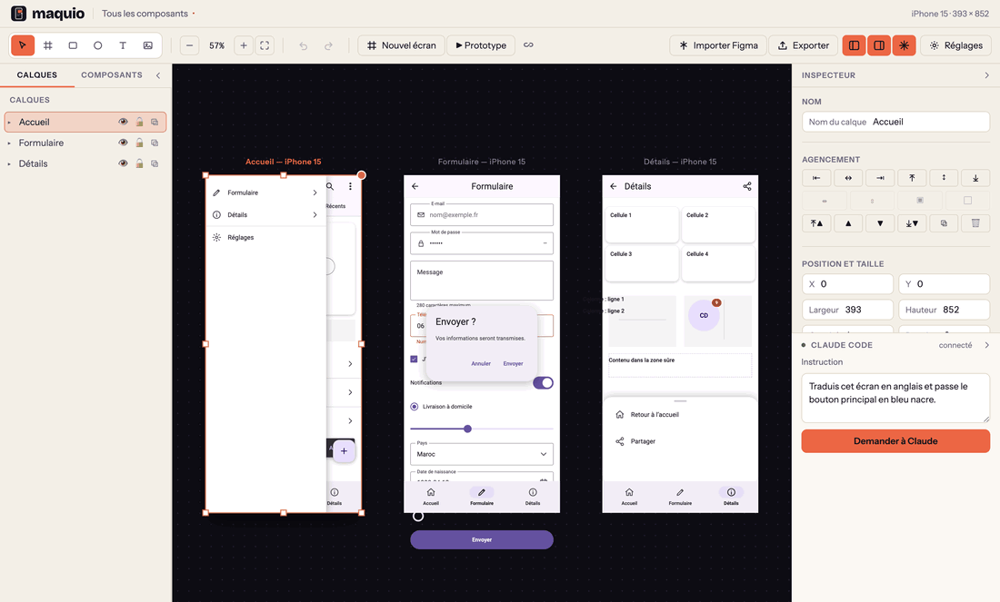

Des composants mobiles natifs
Boutons, champs, interrupteurs, listes, barres d'application et de navigation, tiroirs, dialogues, feuilles basses : 30 composants et 7 conteneurs, avec recherche et glisser-déposer. Chacun est exporté vers le widget natif de la cible, pas vers un rectangle avec du texte.
